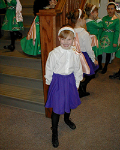
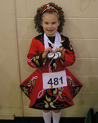
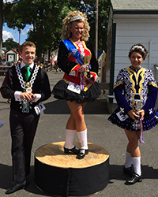
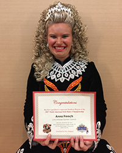
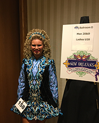

- 
- 
- 
- 
- 
Welcome
We are excited to share this adventure with you and hope you are excited as we are. Looking back, it's hard to believe in just a short while, the North American Irish Dance Championships will be upon us. For those of us involved in Irish dance, it is the culmination of years of hard work for many dancers and an opportunity to qualify for next year's World Championships.
ANNA'S JOURNEY
Years ago, there was a little girl who, seeing Irish dance performed for the first time, announced that was what she wanted to do. At three, it seemed an unlikely dream as for months, her parents couldn't find the school that performed at the festival they attended.
Her mother enrolled the child in the local dance academy where she learned beginning ballet, but the little girl never forgot the Irish dancers and wanted to learn to do THAT and not ballet. Finally, after searching online and in the phone book, the girl's mother went to the local Celtic shop, where, on a bulletin board behind the cash register, was a small torn-off piece of paper with Maureen and a phone number. The mother dutifully wrote down the name and number and called Maureen O'Grady White.
Thus began our family's journey of Irish step dancing. Maureen, after some coaxing, agreed to let Anna take lessons even though she was younger than Maureen recommended. Anna didn't seem to mind and at four and a half started to learn Irish dance. Now at 21 and a half, seventeen years later, Anna is still dancing and loving every minute of it. From Maureen O'Grady Academy of Irish Dance to our Lynn-O'Grady-Quinlan Academy of Irish Dance family, we've had a wonderful time as part of this amazing family of dancers and dance teachers.
As an open dancer, Anna now has an automatic spot for Nationals, but that wasn's always the case. It took her until her senior year in high school to reach the point of competing at the top level of the sport, and a lot of hard work. This will be her third Nationals, after skipping last year due to injury and a semester abroad in college. Since she will be graduating this year, it might be the last year she can devote the time needed to prepare, so this is an extra special Nationals. We are excited to be traveling to Vancouver, British Columbia for the competition. Thank you to Maureen, Colleen, and Katherine for helping Anna prepare this year and providing her the space to grow and shine. We can't thank you enough! And, to everyone else, thanks for joining us on the journey!
INFORMATION ABOUT NAIDC
The Irish Dance Teachers Association of North America (IDTANA) is the sponsor of the North American Irish Dance Championships (NAIDC) which are held annually the first week of July. The competitions rotate among the regions and this year it is Western Canada's turn to host. The NAIDC functions as a secondary qualifying event for the Oireachtas Rince na Cruinne or World Irish Dance Championships held annually over Easter. That competition typically rotates among North America, Great Britain and Ireland. Although there are Irish dance schools in other locations, those three governing bodies have the majority of dance schools. The primary qualifying event for the World Championships, are the regional competitions held between November and December. Roughly ten percent of the final round of competitors in the regional competitions will qualify for Worlds although that is dependent on previous qualifiers and current World medal holders.
There are seven regional governing bodies that promote and put on the NAIDC.
- Irish Dance Teachers Association of Canada - Eastern Region
- Western Canada Irish Dance Teachers Association
- Irish Dance Teachers Association of Mid-America
- IDTANA - Mid-Atlantic Region
- IDTANA - New England Region
- IDTANA - Southern Region
- Western U.S. Regional Council
This information can be found on the IDTANA website. For more information please see the IDTANA events page.